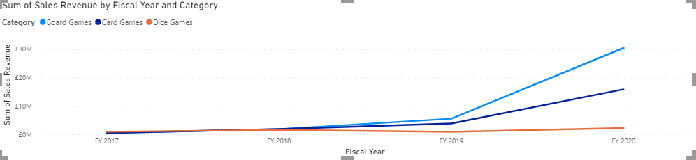
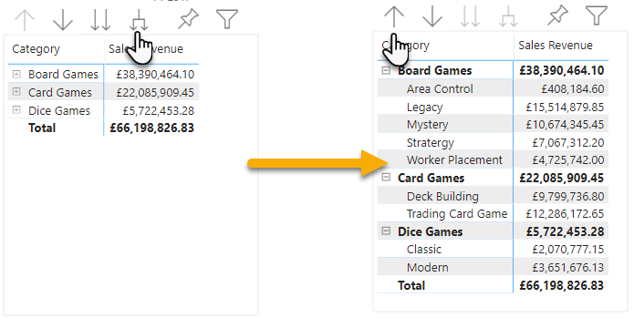
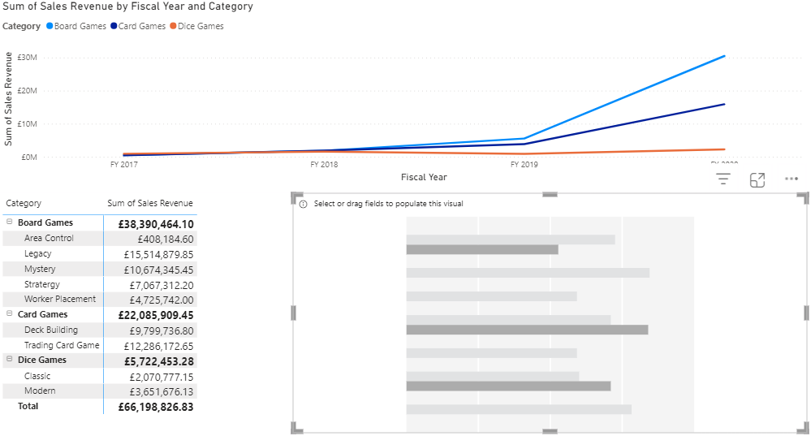
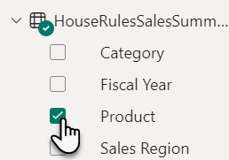
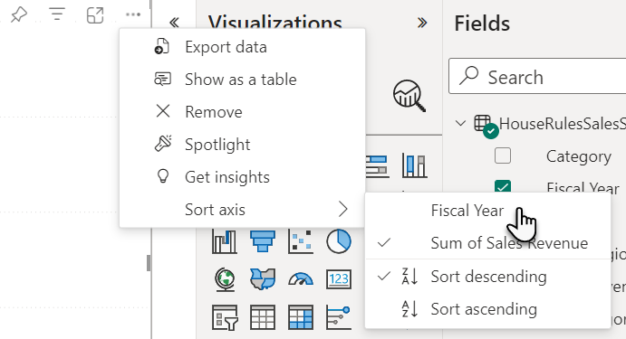
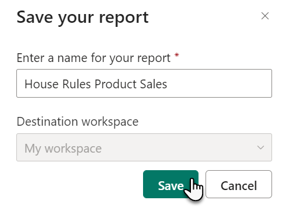

Exercise 2 – Build visualisations
We will now create some visualisations to report on our dataset. We will start by creating the visual
that the sales executive wanted, which was to measure product categories vs sales revenue over time. After this we
will expand the report with other visualisations and pages. Below is a preview of the data we have connected to. We
will use the column headings in our visualisations.

- Firstly, let us minimise the filters pane to allow for more space, click on the
 button in the Filters pane
button in the Filters pane

- In the Visualisations pane, click on Line
chart

- Using the drag handle, increase the width of the line chart

- Ensure that the line chart visual is still selected (otherwise you cannot configure it) then drag
from the Fields pane Fiscal Year into the X-axis well and Sales Revenue into the Y-axis
well (you may need to expand the tables contents by clicking )

- The line chart will update however the fiscal year is in the wrong order, from 2020 to 2017

- Click on the ellipsis (…) of the selected line chart, then choose Sort axis > Sort ascending (the ellipsis is normally at the top
right, but will appear at the bottom right if the visual is aligned to the top of the page)

- You should see the chart swap around with 2017 at the bottom left and 2020 on the bottom right
- The chart is not very detailed, we need to show the revenue, split by category, to do this, drag
the Category field into the Legend well,
while the line chart visual is selected

- This is great, we have given quite a detailed account of the steps for this visualisation, let us
add a few more visuals to our report
Deselect the line chart by clicking on the white space below the visual, if
you do not do this you will accidentally change the line chart to a different visual type
- With the line chart deselected, from the Visualisations pane,
click on Matrix (note that
the table visual has a similar icon without the blue shading, hover your mouse over visuals to see their names)

- The interface will match the width of the other visualisation above it, it is handy, but we do
not want it to be this big, reduce the width of this to 1/3 the side of the visual above, situating it on the
left

- Making sure the Matrix visual is selected, configure the following fields to appear in the
following wells (ensure to add category to rows before subcategory as the order makes a different to the drill
down)
|
Field
|
Well
|
|
Category
|
Rows
|
|
Subcategory
|
Rows
|
|
Sales Revenue
|
Values
|
- The Matrix visual should resemble the image below, try clicking the Expands all down one level in the hierarchy
 and Drill up to drill through your data (this occurs because there are two fields in the Rows well)
and Drill up to drill through your data (this occurs because there are two fields in the Rows well)

- With the Matrix visual selected, in the Visualisations pane, click on Format then expand the Values category

- Under Font change the font size from 10 to 12 (you may wish to resize the visualisation after changing the font size)
- Click into the white space so that neither visualisation is
selected, then from the Visualisations pane and click on the Clustered
bar chart
 which should fit into the remaining
space
which should fit into the remaining
space

- Drag the following fields into the listed wells (ensure the clustered bar chart is selected)
|
Field
|
Well
|
|
Sales Region
|
Y-axis
|
|
Sales Revenue
|
X-axis
|
|
Category
|
Legend
|
- The resultant chart should look like this

- At the bottom of the report, right-click on the page tab
labelled Page 1 and choose Rename and call the page Sales by Product Category
Optional – add another page to the report
If you are running short on time, you are free to skip this section where we add a further page to the
report with two more visualisations
- To create a new page, click on the + tab to the right of the current
page

- Right-click on the new page labelled Page 1 and
choose Rename and call the page Sales by Product
- Another way to add a visualisation is to select a field, then change the visual, to do this,
click on the checkbox next to Product in the Fields pane

- This adds a table visual by default, to change it, make sure the table visual is still selected
and then from the Visualisations pane, select Slicer

- Resize the height of the visual so it takes up the whole space on the left-side of the report

- Select the white space to the right of the slicer to de-select it the slicer visual, then add one
more visual, the Clustered column chart
- Resize this visual to take up the remaining ¾ of the report page
- Add the following fields to their wells (make sure the clustered column chart is selected)
|
Field
|
Well
|
|
Fiscal Year
|
X-axis
|
|
Sales Revenue
|
Y-axis
|
- To sort the chart, with it selected, click on the ellipsis (…)
at the top-right of the cluster column chart visual, then select Sort axis then choose Fiscal Year

- Although it feels like nothing has changed, the ascending and descending options now relate to
fiscal year rather than sales revenue, to test this, click on the ellipsis (…) at the
top-right of the cluster column chart visual, then select Sort axis then choose Sort ascending

- With the visual still selected, click on the Format button in the Visualisations pane and expand Columns
- Set Show all to On then change the colours of the
FY data to a scheme that you prefer

- To test your page, click on some of the products, such as Boggle, in the
slicer to filter the data in the clustered column chart (click on the same value twice to remove the filter)
- At the bottom of the report, click on the Sales by Product Category page
tab, this is important to do before saving as the report will open on the last page you had selected
Exercise 3 – Create a dashboard
We will now save our report, however we have been asked if we can design a dashboard that combines
elements of our report with one that another report we have in the pipeline. Dashboards are only a single page and are
good for summaries and combining elements from multiple reports for use on wall mounted TVs as well as desktops,
tablets, and mobile phones. Let us now build a dashboard with a mobile view to complement our report, which we can add
new tiles to later when our next report is ready.
- To save your report, click on File > Save
- Name the report House Rules Product Sales
- Click Save

- In the left navigation select your workspace